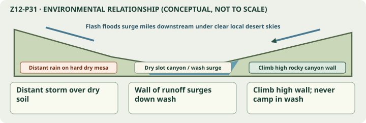

Z12-P31 · Extreme environments · New manuscript
Avoid dry washes, slot canyons and desert arroyos when distant storms build
Prevent fatal entrapment in desert flash floods triggered by rain falling miles away over parched soils.
When it applies · Desert canyons, dry washes, arroyos, rocky narrows and arid camp drainage basins.
Equipment · Regional NWS weather forecast (covering entire upstream watershed), map showing canyon exits and high ground.

Actions
- Check the weather forecast for the ENTIRE upstream mountain or mesa watershed—not just your immediate trailhead—because hard sun-baked desert soils cannot absorb rain and funnel runoff into walls of water miles downstream under blue skies.[X07, X08, E04]
- Never camp inside dry streambeds, sandy canyon bottoms or narrow slot canyons, and stay out of constricted narrows whenever any thunderstorm chance exists anywhere upstream.[E04, X07, T16]
- Watch and listen for distant dark clouds upslope, sudden muddy trickles, floating twigs or a rising rushing roar—climb immediately perpendicular onto high rocky canyon walls or benches.[E04, X07, X11]
Failure recognition · Pitching a tent on soft flat sand inside a dry desert wash because local skies look crystal clear while a thunderstorm dumps rain 15 miles upstream.[E04, X07, X08]
Verify · Confirm clear watershed-wide forecast before entering narrow canyons and always pitch camps well above high-water canyon debris lines.[E04, X07, ED]
Stop or change course · Any Flash Flood Watch/Warning, upstream storm buildup or sudden trickle of muddy water demands climbing to high ground immediately and leaving gear behind.[T16, E04, X07]
Evidence and editorial notes
- E04 · NWS · Flood Safety: Key Points for Camping and Hiking (agency PDF)
- Section: Before and during camping; know your surroundings · Conditions: Stream valleys and runoff channels subject to flash flooding
Support: Choose higher ground away from water channels. Rain far upstream can drive rapid flooding.
Limitations: Dry streambeds and gentle swales can flood rapidly without local rainfall. · Conflicting evidence: None; aligns with NWS-FLOOD.
Editorial note: Core hydrological exclusion rule for shelter placement. · Specialist reviewer: Emergency management and hydrology
Primary source · checked 2026-11-24 - T16 · NWS · Flood Safety (current web edition)
- Section: Flood Watches and Warnings; Turn Around Don’t Drown · Conditions: U.S. flood alerts and routes crossing moving or standing floodwater
Support: Use the local flood alert wording and follow directions to move to safer higher ground. Never drive around a barricade or enter a flooded route.
Limitations: Stages, timing and detours depend on event and locality; no observable safe crossing depth. · Conflicting evidence: See A02 claim audit for boundaries.
Editorial note: Clarifies Watch vs Warning decision thresholds in Z01 scenarios. · Specialist reviewer: Emergency management and meteorology
Primary source · checked 2026-11-24 - X07 · NPS · Death Valley Safety (Desert Travel and Heat) (current web edition)
- Section: Death Valley Safety > Desert Heat, Dehydration, Flash Floods and Vehicle Breakdown · Conditions: Arid desert travel, canyon country and extreme summer heat
Support: Desert heat accelerates fluid and electrolyte loss rapidly, temperatures inside parked vehicles spike to fatal levels within minutes, dry washes flash-flood from distant storms and staying with a disabled road vehicle is generally safer than walking into extreme heat.
Limitations: Cell service is widely absent across desert basins; water needs can exceed 1 gallon/day dramatically during heat. · Conflicting evidence: None; aligns with CDC-HEAT and NWS-HEAT.
Editorial note: Core desert-environment evidence across Z12 heat/arid cards. · Specialist reviewer: Desert safety and emergency medicine
Primary source · checked 2026-11-24 - X08 · NWS · Drought Safety (current web edition)
- Section: Drought Safety > Dry Soils, Dust Storms and Extreme Fire Risk · Conditions: Arid regions, seasonal drought and dry-basin travel
Support: Drought dries seasonal springs, hardens soils so sudden rain runs off instantly into flash floods, raises wildfire intensity and produces blinding dust storms (haboobs) where drivers must pull completely off roadways with lights off.
Limitations: Flash-flood risk rises paradoxically on parched hydrophobic desert ground. · Conflicting evidence: None; complements NPS-DESERT and NWS-WILDFIRE.
Editorial note: Grounds desert flash-flood, dust-storm and dry-source cards in Z12. · Specialist reviewer: Meteorology and arid-environment safety
Primary source · checked 2026-11-24 - X11 · FEMA / Ready.gov · Landslides and Debris Flow (current web edition)
- Section: Landslides and Debris Flow > Warning Signs and Burn Scars · Conditions: Steep slopes, recent wildfire burn scars and saturated mountain/coastal terrain
Support: Heavy rainfall on steep terrain or wildfire burn scars triggers fast-moving debris flows; watch for rumbling, tilting trees, sudden muddy stream surges or new ground cracks and evacuate perpendicular/uphill away from valleys immediately.
Limitations: Debris flows travel faster than a person can run and recur in previously scarred drainages. · Conflicting evidence: None; pairs with E04 and E17.
Editorial note: Supports mountain/burn-scar landslide and debris-flow hazard cards. · Specialist reviewer: Geological hazard and emergency management
Primary source · checked 2026-11-24
Source lineage · NPS desert safety, NWS flood and drought safety; new manuscript · Classification · New manuscript.